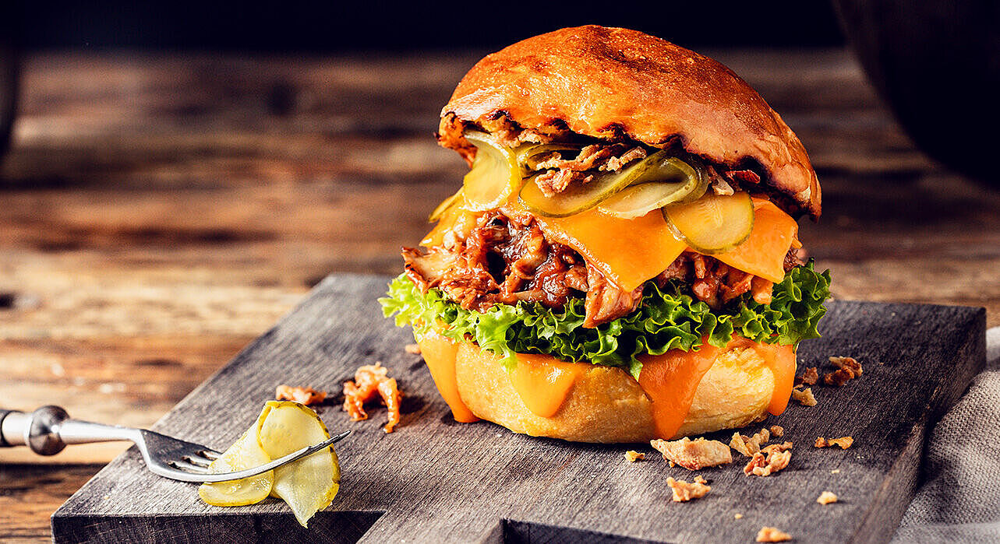

Pulled Chicken Burger

Delicious pulled chicken burger
Ingredients
- 1 tablespoon vegetable oil
- 4 cloves garlic, minced
- ½ large yellow onion, diced
- 1 tablespoon brown sugar, or to taste
- 2 teaspoons kosher salt, or to taste
- 1 teaspoon ground black pepper
- 1 pinch cayenne pepper, or to taste
- 2 pounds boneless, skinless chicken thighs
- ¾ cup ketchup
- 1 tablespoon Dijon mustard
- ½ teaspoon Worcestershire sauce
- 1 tablespoon hot sauce, or to taste
- 1 cup water
- 2 tablespoons thinly sliced green onions
- ½ cup diced jalapeño pepper
- 4 medium hamburger buns - split, toasted and buttered
Steps
- Add vegetable oil to a saucepan, and then add (in this order) garlic, yellow onion, brown sugar, kosher salt, black pepper, cayenne, chicken thighs, ketchup, Dijon mustard, Worcestershire sauce, and hot sauce.
- Place over high heat and wait until you can hear the garlic sizzling in the bottom of the pan, about 30 seconds. Let garlic sizzle for about 30 seconds before adding the water. Stir everything together and wait for the mixture to boil.
- Reduce heat to medium-low and simmer, uncovered, until the chicken falls apart, about 1 1/2 hours.
- Stir in the green onions and peppers and cook until the peppers just turn tender, 3 to 5 minutes more. Taste for seasoning.
- Remove from heat and serve on toasted hamburger buns.
Main page